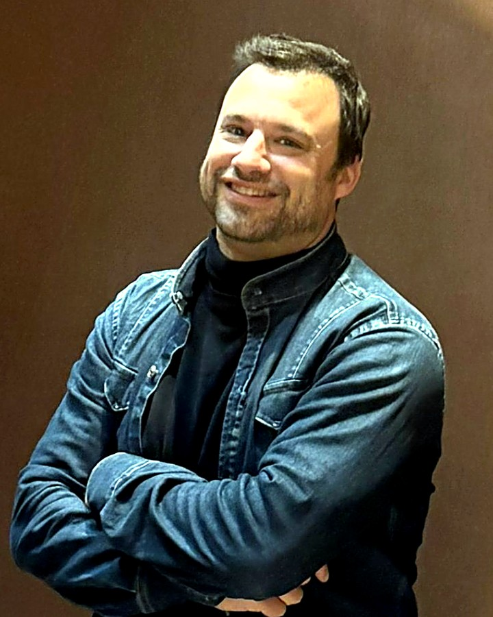
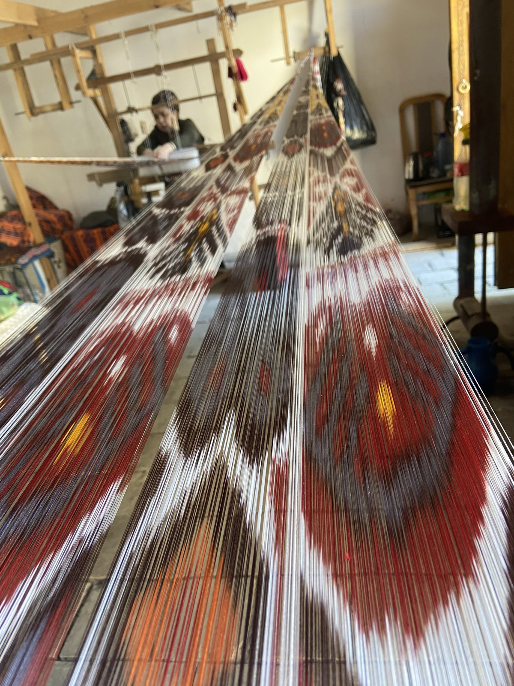
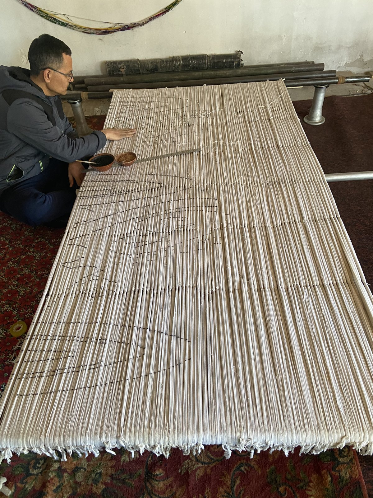
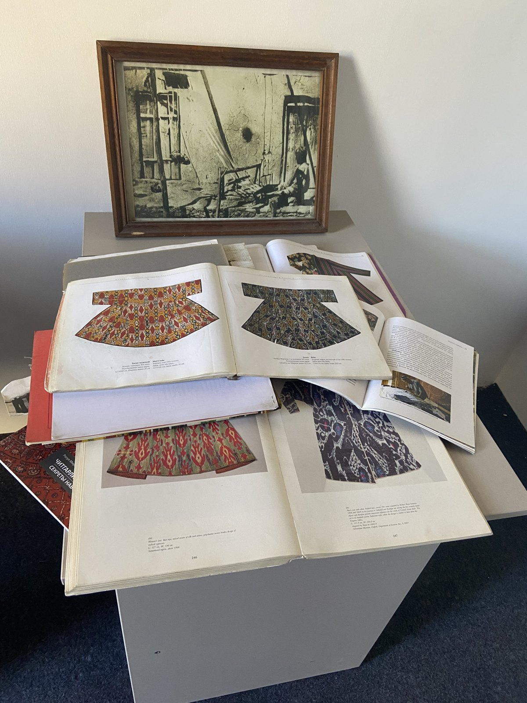
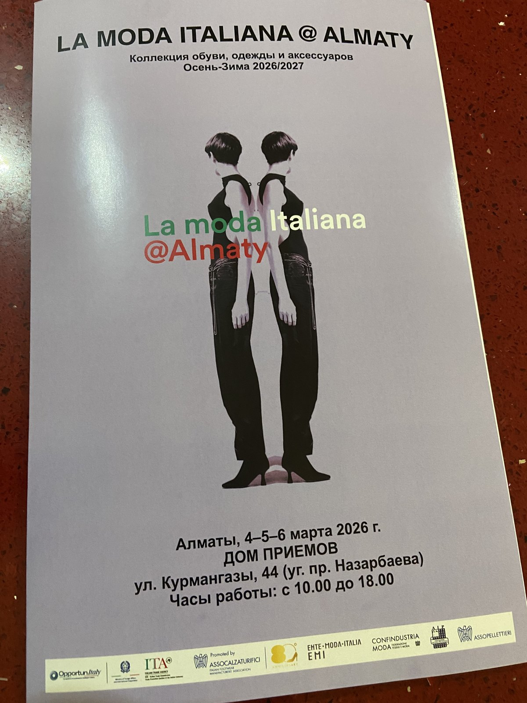

High-end screen-printing I oversaw at Hermès textile.
Fifteen years protecting the soul of luxury textile, now fusing that craft with AI and new ways of selling.
Where heritage is the warp, and technology the weft.

NDFor six years I ran the commercial engine at the summit of luxury textile: Hermès, the Executive Committee, eight factories, a business built on the finest craft in the world.
Then I chose to step away, and earn a Global MBA in AI and entrepreneurship.
Having reached the top of the commercial ladder, I wanted to keep growing. I set out to understand how AI is reshaping business, to sharpen my grasp of entrepreneurship and modern management, and to learn from some of the finest managers in the field.
In 2026 I travelled the ancient Silk Road, visiting silk mills across Uzbekistan and China, sitting with weavers, dyers and mill owners where the craft still lives. To lead this industry, I wanted to keep my hands in its origins.



Uzbekistan, 2026. Where the silk still begins by hand.
Invited by the Shenzhen Textile Association and interviewed on television, on how to relaunch the apparel industry of southern China. A sign of the trust this industry places in cross-cultural expertise.
The bridge I care about most is carrying the standards of European luxury into the Chinese textile world, and bringing its energy back. Being asked to speak, on camera, is a quiet confirmation that the bridge is real.

My concept of phygital retail.
The idea is simple. Our agents carry only the best sellers in hand. On a digital tool, they then scroll the whole collection with the customer, with or without 3D glasses. It keeps the human relationship at the centre, and gives it the reach of e-commerce.

A virtual 3D shop where buyers walk the space and purchase brands in total autonomy. A working prototype of my phygital concept, live online.
Enter the store ↗To lead the commercial future of a house, or a venture, that wants to modernize without losing its soul. If that sounds like you, let's talk.